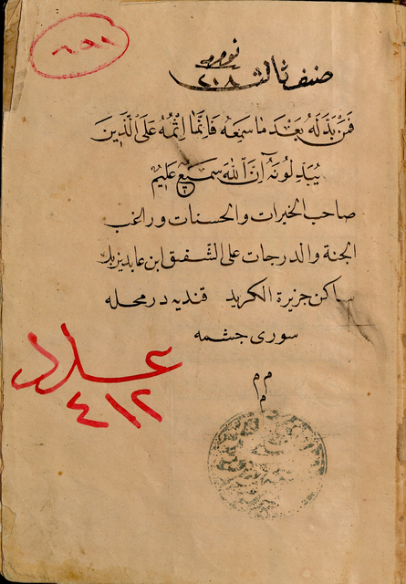
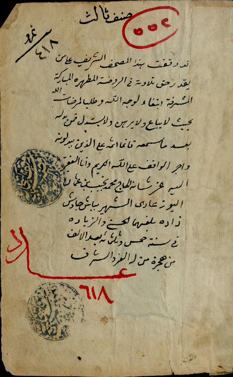
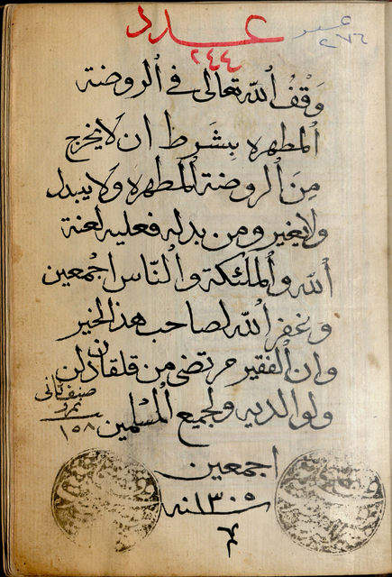
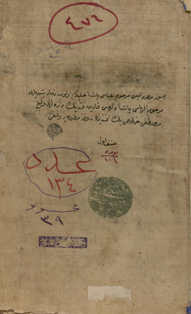
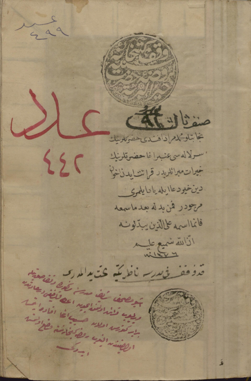
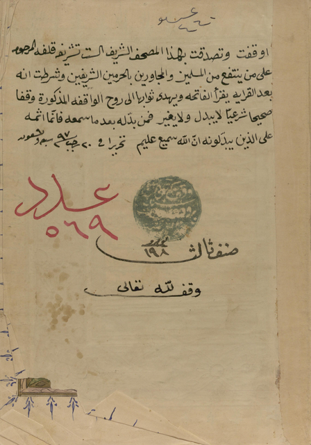
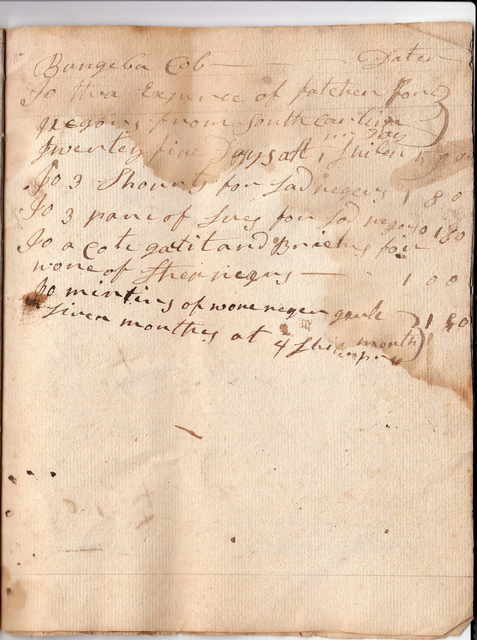

images/00003-1345-AB009712.tif. Display copy reduced proportionally; no regions or readings have been added.
00003-1345-AB009712
Human layout reference unavailable.
Historical Arabic-script manuscripts
A working record of page layout, annotations, stamps and seals, and experiments in transcription. The manuscript image is the starting point for each inquiry.
Source evidence
Each entry represents one image, not necessarily a complete manuscript. File identifiers are retained where catalogue descriptions are unavailable.

images/00003-1345-AB009712.tif. Display copy reduced proportionally; no regions or readings have been added.
Human layout reference unavailable.

images/00003-747-AB009300.tif. Display copy reduced proportionally; no regions or readings have been added.
Human layout reference unavailable.

images/00007-97-AB008730.tif. Display copy reduced proportionally; no regions or readings have been added.
Human layout reference unavailable.

images/1280_AB010309_0005.tif. Display copy reduced proportionally; no regions or readings have been added.
Human layout reference unavailable.

images/436_AB008999_0003.tif. Display copy reduced proportionally; no regions or readings have been added.
Human layout reference unavailable.

images/670_AB009188_0003.tif. Display copy reduced proportionally; no regions or readings have been added.
Human layout reference unavailable.

images/Buchanan MSS1P9267fFA2.jpg. Display copy reduced proportionally; no regions or readings have been added.
Human layout reference unavailable.
Editorial conventions
The image is evidence. A model’s transcription or identification is a proposal about that evidence. Review labels describe the status recorded in the research files, not a judgment about the quality of a reading.
| Image identifier | Human layout reference | Human-corrected text |
|---|---|---|
| 00003-1345-AB009712 | Unavailable | Unavailable |
| 00003-747-AB009300 | Unavailable | Unavailable |
| 00007-97-AB008730 | Unavailable | Unavailable |
| 1280_AB010309_0005 | Unavailable | Unavailable |
| 436_AB008999_0003 | Unavailable | Unavailable |
| 670_AB009188_0003 | Unavailable | Unavailable |
| Buchanan MSS1P9267fFA2 | Unavailable | Unavailable |
Potential research · not demonstrated capabilities
The collection contains approximately 400 manuscripts, generally 4–10 pages each. A feature noticed on one page could become a starting point for asking questions across the collection.
If features could be extracted reliably and reviewed, individual pages could become a research corpus linked by marks, passages, names, and questions. The pathways below are possibilities to investigate—not searches or historical connections already proven by this experiment.
Visual resemblance could identify candidates for comparison. Reading inscriptions and consulting contextual evidence would be needed to associate seals with institutions or establish relationships between manuscripts.
Identifying a waqf statement requires interpreting its meaning, not simply detecting a visual region. A corrected reading and historical context would be needed to identify names and assess possible connections; not every statement will supply every link.
Similar handwriting could help scholars gather examples for closer examination. It would not by itself establish the same writer, date, provenance, or relationship between manuscripts.